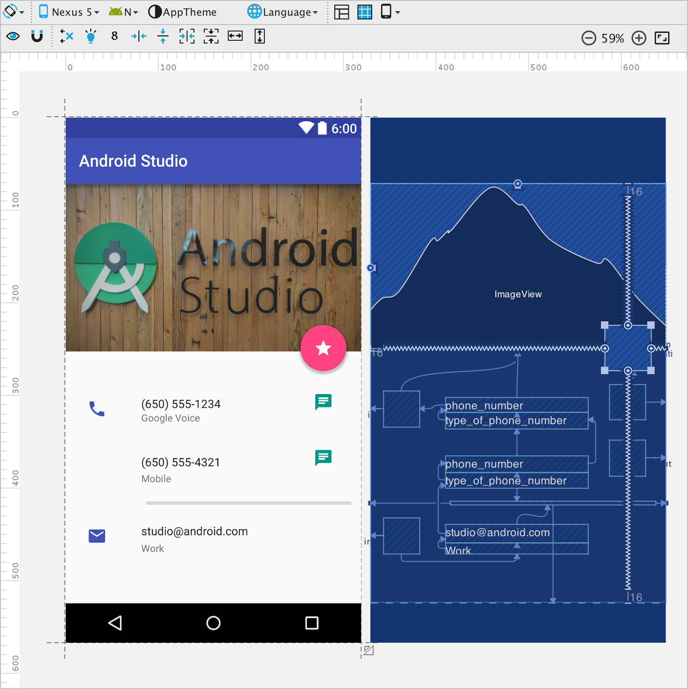

android.support.constraint.ConstraintLayout


- Matthias Friedrich
- Android Developer @ Jimdo
- Cofounder/-organizer
GDG Bremen/GDG Hamburg Android - @mtthsfrdrch
- google.com/+MatthiasFriedrich
Material principles
Material metaphor
Bold, graphic, intentional
Meaningful Motion
Meaningful Motion
- Foreshadow actions
- Distract from loading
- Communicate hierarchy
- Guide focus
android.support.design.widget.
CoordinatorLayout
- Decorator
- Orchestrator
… a super-powered
FrameLayout
android.support.design.widget.
CoordinatorLayout
Anchor
<android.support.design.widget.CoordinatorLayout ...>
<BottomSheet
android:id="@+id/bottomSheet" .../>
<android.support.design.widget.FloatingActionButton
app:layout_anchor="@id/bottomSheet"
app:layout_anchorGravity="top|right" .../>
</android.support.design.widget.CoordinatorLayout>
android.support.design.widget.
CoordinatorLayout
Anchor - nesting
<android.support.design.widget.CoordinatorLayout ...>
<LinearLayout ...>
<FrameLayout
android:id="@+id/anchorView" .../>
</LinearLayout>
<android.support.design.widget.FloatingActionButton
app:layout_anchor="@id/anchorView"
app:layout_anchorGravity="top|right" ...>
</android.support.design.widget.CoordinatorLayout>
android.support.design.widget.CoordinatorLayout.
Behavior
Plugin for child views of CoordinatorLayout, intercepts:
- View's Measurement
- View's Layouting
- View's Touch events
- "Neighbour"-View's Size/Position-changes
- Window Insets
- Nested Scrolling
android.support.design.widget.CoordinatorLayout.
Behavior
<android.support.design.widget.CoordinatorLayout ...>
<MyView
app:layout_behavior=".MyCustomBehavior" .../>
</android.support.design.widget.CoordinatorLayout>
@CoordinatorLayout.DefaultBehavior(MyBehavior.class)
public class MyView extends View { ...
((CoordinatorLayout.LayoutParams) myView
.getLayoutParams()).setBehavior(new MyBehavior())
android.support.design.widget.CoordinatorLayout.
Behavior
Behavior Params
public class MyCustomBehavior extends Behavior<View> {
public MyCustomBehavior() { ... }
public MyCustomBehavior(Context context, AttributeSet attrs) {
TypedArray a = context.obtainStyledAttributes(attrs,
R.styleable.MyCustomBehavior_Params);
myParamValue(a.getDimensionPixelSize(
R.styleable.MyCustomBehavior_Params_behavior_myParam, 0));
}}
<android.support.design.widget.CoordinatorLayout ...>
<MyView ...
app:layout_behavior=".MyCustomBehavior"
app:behavior_myParam="..." />
</android.support.design.widget.CoordinatorLayout>
android.support.design.widget.CoordinatorLayout.
Behavior
Behavior Typing
public class MyCustomBehavior extends Behavior<MyView> {
...
}
public class MyCustomBehavior<V extends View>
extends Behavior<V> {
...
}
android.support.design.widget.
FloatingActionButton.Behavior
Example: Listening for "Neighbour"-View changes
android.support.design.widget.
FloatingActionButton.Behavior
Example: Listening for "Neighbour"-View changes
public static class Behavior extends
CoordinatorLayout.Behavior<FloatingActionButton> {
...
@Override
public boolean layoutDependsOn(CoordinatorLayout parent,
FloatingActionButton child, View dependency) {
return SNACKBAR_BEHAVIOR_ENABLED
&& dependency instanceof Snackbar.SnackbarLayout;
}
...
}
android.support.design.widget.
FloatingActionButton.Behavior
Example: Listening for "Neighbour"-View changes
@Override
public boolean onDependentViewChanged(CoordinatorLayout parent,
FloatingActionButton child, View dependency) {
if (dependency instanceof Snackbar.SnackbarLayout) {
updateFabTranslationForSnackbar(parent, child, dependency);
} else if (dependency instanceof AppBarLayout) {
updateFabVisibility(parent, (AppBarLayout) dependency, child);
}
return false;
}
MaxWidthBehavior
Example: Intercepting Measurement
MaxWidthBehavior
Example: Intercepting measurement
<android.support.design.widget.CoordinatorLayout ...>
<android.support.v7.widget.CardView
android:layout_width="match_parent"
android:layout_height="56dp"
android:layout_gravity="center|bottom"
...
app:behavior_maxWidth="600dp"
app:layout_behavior=".MaxWidthBehavior" />
</android.support.design.widget.CoordinatorLayout>
MaxWidthBehavior
Example: Intercepting Measurement
public class MaxWidthBehavior extends CoordinatorLayout.Behavior<View> {
private int maxWidth;
public MaxWidthBehavior(Context context, AttributeSet attrs) {
super(context, attrs);
TypedArray a = context.obtainStyledAttributes(attrs,
R.styleable.MaxWidthBehavior_Params);
mMaxWidth = a.getDimensionPixelSize(
R.styleable.MaxWidthBehavior_Params_behavior_maxWidth, 0);
a.recycle();
}
...
MaxWidthBehavior
Example: Intercepting Measurement
@Override
public boolean onMeasureChild(CoordinatorLayout parent, V child,
int parentWidthMeasureSpec, int widthUsed,
int parentHeightMeasureSpec, int heightUsed) {
int width = View.MeasureSpec.getSize(parentWidthMeasureSpec);
if (width > mMaxWidth) {
width = mMaxWidth;
int widthMode = View.MeasureSpec.EXACTLY;
parent.onMeasureChild(child,
View.MeasureSpec.makeMeasureSpec(width, widthMode), widthUsed,
parentHeightMeasureSpec, heightUsed);
return true;
}
return false;
}
android.support.design.widget.
AppBarLayout
Example: Intercepting Nested Scrolling
- implements AppBar
related animations - just works inside
CoordinatorLayout
android.support.design.widget.
AppBarLayout
<android.support.design.widget.CoordinatorLayout ...>
<android.support.design.widget.AppBarLayout
android:layout_height="wrap_content"
android:layout_width="match_parent">
<android.support.v7.widget.Toolbar
app:layout_scrollFlags="scroll|enterAlways" ... />
</android.support.design.widget.AppBarLayout>
<android.support.v7.widget.RecyclerView
app:layout_behavior="@string/appbar_scrolling_view_behavior" .../>
</android.support.design.widget.CoordinatorLayout>
android.support.design.widget.
AppBarLayout
app:layout_scrollFlags=
"enterAlways"- any downward scroll will make
the view become visible again - "Quick return pattern"
android.support.design.widget.
AppBarLayout
app:layout_scrollFlags="
"enterAlwaysCollapsed- only reexpand when scrolling view
has reached it's top
android.support.design.widget.
AppBarLayout
app:layout_scrollFlags=
"exitUntilCollapsed- scroll off until minHeight
is reached
android.support.design.widget.
AppBarLayout
android.support.design.widget.
CollapsingToolbarLayout
- to be used inside AppBarLayout
- wraps a Toolbar
- applies animations to it's children:
- title translation/scaling
- fading
- parallax scrolling
More Behavior callbacks
@Overwrite
public boolean onLayoutChild(CoordinatorLayout parent,
V child, int layoutDirection) { ... }
@Overwrite
public WindowInsets onApplyWindowInsets(
CoordinatorLayout coordinatorLayout, V child,
WindowInsetsCompat insets) { ... }
More useful stuff
BottomSheetBehavior (Intercepts Touch Events & Nested Scrolling)SwipeDismissBehavior (Intercepts Touch Events)Roundup
- CoordinatorLayout is the core of Support Design Lib
- Powerful framework
- Standalone/Disconnected impls: Behaviors
- no Activity/Fragment/View code-cluttering
- easily configurable via layout.xml
- learn from default impls in Design Lib
- possible Raceconditions together with screen transitions
<Thanx!>